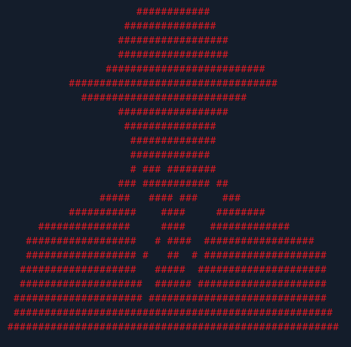

Hello Everyone!
I’m Shubham
Cybersecurity professional and ethical hacker with over 2 and a half years of experience with an interest in offensive security, dark web, and bug bounty.

Hello Everyone!
Cybersecurity professional and ethical hacker with over 2 and a half years of experience with an interest in offensive security, dark web, and bug bounty.